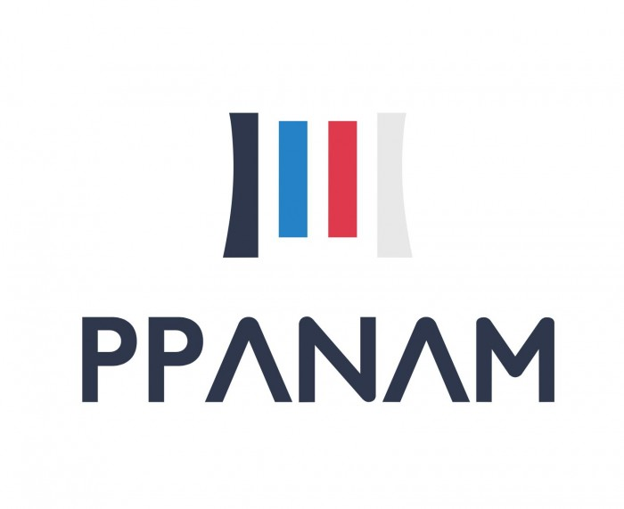

During my first internship to discover the business world.
I could realize the following missions :
• Synchronization of the company's e-reputation with its graphic identity
• Management of deadline with efficiency
• Development and initiation of a Crowdfunding project : Costs, time and performance.
• Social network management: Post and video editing (Youtube, Instagram and Facebook)
